Shiny Application to Compare Covid Progression in 5 ASEAN Countries
covidasean.Rmdlibrary(covidasean) #> Loading required package: tidyverse #> -- Attaching packages --------------------------------------- tidyverse 1.3.0 -- #> v ggplot2 3.3.2 v purrr 0.3.4 #> v tibble 3.0.3 v dplyr 1.0.1 #> v tidyr 1.1.2 v stringr 1.4.0 #> v readr 1.3.1 v forcats 0.5.0 #> -- Conflicts ------------------------------------------ tidyverse_conflicts() -- #> x dplyr::filter() masks stats::filter() #> x dplyr::lag() masks stats::lag()
This package contains shiny dashboard for comparing covid-19 outbreak in 5 ASEAN countries represented by Indonesia, Malaysia, Singapore, Philippines and Thailand. The data source is retrieved from tidycovid R package by Joachim Gassen and its period ranged from 2020-03-30 until 2020-10-13.
It also displays people’s mobility trend in these countries (originally sourced from Google’s Mobility report which covers mobility in workstations, parks, groceries, stations, recreations and residentials.
How to install covidasean package?
devtools::install_github("etc5523-2020/r-package-assessment-dedi0003", subdir = "covidasean")
Accessing dataset
We can access the dataset to self explore it via:
library(covidasean) library(tibble) covid_asean_df #> # A tibble: 221 x 53 #> iso3c country date confirmed deaths recovered ecdc_cases ecdc_deaths #> <chr> <chr> <date> <dbl> <dbl> <dbl> <dbl> <dbl> #> 1 IDN Indone~ 2020-03-30 1414 122 75 1285 114 #> 2 IDN Indone~ 2020-04-04 2092 191 150 1986 181 #> 3 IDN Indone~ 2020-04-09 3293 280 252 2956 240 #> 4 IDN Indone~ 2020-04-14 4839 459 426 4557 399 #> 5 IDN Indone~ 2020-04-19 6575 582 686 6248 535 #> 6 IDN Indone~ 2020-04-24 8211 689 1002 7775 647 #> 7 IDN Indone~ 2020-04-29 9771 784 1391 9511 773 #> 8 IDN Indone~ 2020-05-04 11587 864 1954 11192 845 #> 9 IDN Indone~ 2020-05-09 13645 959 2607 13112 943 #> 10 IDN Indone~ 2020-05-14 16006 1043 3518 15438 1028 #> # ... with 211 more rows, and 45 more variables: total_tests <dbl>, #> # tests_units <chr>, soc_dist <dbl>, mov_rest <dbl>, pub_health <dbl>, #> # gov_soc_econ <dbl>, lockdown <dbl>, apple_mtr_driving <dbl>, #> # apple_mtr_walking <dbl>, apple_mtr_transit <dbl>, #> # gcmr_retail_recreation <dbl>, gcmr_grocery_pharmacy <dbl>, #> # gcmr_parks <dbl>, gcmr_transit_stations <dbl>, gcmr_workplaces <dbl>, #> # gcmr_residential <dbl>, gtrends_score <dbl>, gtrends_country_score <int>, #> # region <chr>, income <chr>, population <dbl>, land_area_skm <dbl>, #> # pop_density <dbl>, pop_largest_city <dbl>, life_expectancy <dbl>, #> # gdp_capita <dbl>, timestamp <dttm>, new_cases <dbl>, ave_new_cases <dbl>, #> # new_recovered <dbl>, ave_new_recovered <dbl>, new_deaths <dbl>, #> # ave_new_deaths <dbl>, ave_work <dbl>, ave_station <dbl>, ave_grocery <dbl>, #> # ave_recreation <dbl>, ave_parks <dbl>, ave_resident <dbl>, #> # workstations <dbl>, stations <dbl>, groceries <dbl>, recreations <dbl>, #> # parks <dbl>, residentials <dbl>
Exploring dataset
Exploring dataset can be done as an example below:
library(covidasean) library(ggplot2) library(dplyr) covid_asean_df %>% filter(country == "Indonesia") %>% ggplot(aes(x = date, y = new_cases))+ geom_line(color = "red")+ geom_point(aes(x = date), color = "darkred")+ theme_minimal()

Launching shiny dashboard
Or alternatively (and easier way), we can launch the dashboard directly using:
library(covidasean) launch_app()

The shiny dashboard consists of a control panel (left sidebar) and a main display. The main display has 3 different plots.
The first plot shows total new cases in 5 countries which can be clicked on to bring us to the second plot which details cases in the selected country. The third plot displays mobility trend which can be adjusted by several categories located on the control panel.
We can also check summary information for a particular country by selecting country name in the table plot of the control panel.